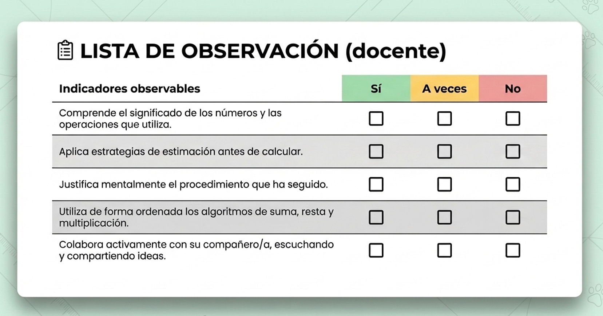
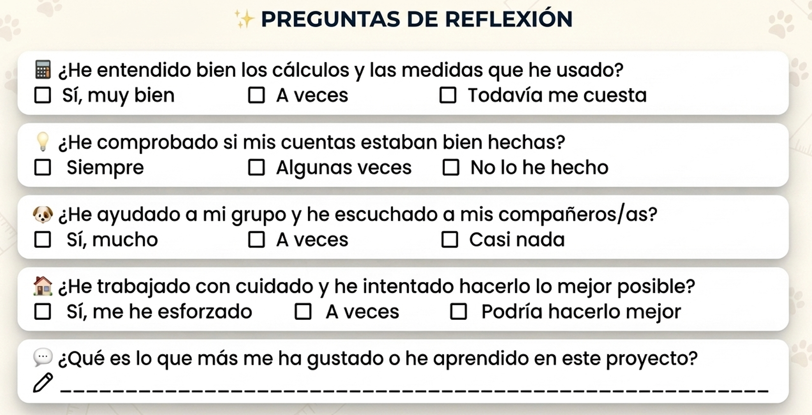

EVALUAMOS
Para esta SdA utilizaremos diferentes instrumentos de evaluación con el objetivo de recoger información del progreso del alumnado en diversos momentos del proceso de aprendizaje. Esto nos ayudará a ofrecer retroalimentación continua y adaptar la acción educativa de manera flexible en función a las necesidades detectadas.
Los instrumentos de evaluación que he desarrollado son:
1.- Lista de cotejo.
2.- Instrumento final de reflexión metacognitiva y autoevaluación.
Ambos instrumentos permiten evaluar no solo el resultado final sino el proceso seguido por el alumnado durante las distintas actividades del proyecto.
LISTA DE COTEJO
La lista de cotejo será utilizada durante las actividades relacionadas con el cálculo del pienso, el coste de las vacunas y la resolución de pequeños problemas matemáticos y retos relacionados con el funcionamiento del refugio para perros.
Es un instrumento sencillo, pero muy eficaz, ya que permite registrar evidencias de aprendizaje mientras el alumnado trabaja de forma individual o cooperativa. Como docentes, este instrumento nos permite pasear por los grupos o las mesas de nuestros niños y niñas, observar, anotar y ofrecer retroalimentación.

Créditos: contenido original @GcRuth. Maquetación con ayuda de NotebookLM.
¿Qué se evalúa?
Con este instrumentos valorarán aspectos relacionados con:
- La comprensión y aplicación de operaciones matemáticas.
- El uso de estrategias de cálculo y estimación.
- La resolución de situaciones problematizadas y contextualizadas.
- La participación colaborativa (cuando proceda).
La capacidad de comunicar procesos y resultados.
¿Cuándo y cómo se utilizará?
La lista de cotejo se aplicará durante las sesiones de trabajo práctico del proyecto, sobre todo en aquellas actividades donde el alumnado deba realizar cálculos relacionados con el presupuesto del refugio, la alimentación y cuidado de los perros, los gastos derivados de las vacunas y cuidados del veterinario.
Como docentes, podremos registrar observaciones mientras el alumnado trabaja, tanto de manera individual como en parejas o grupos. Esto permitirá recoger información en situaciones reales de aprendizaje y no únicamente mediante pruebas escritas.
REFLEXIÓN METACOGNITIVA Y AUTOEVALUACIÓN
Al finalizar el proyecto, el alumnado realizará una autoevaluación basadas en preguntas de reflexión sobre su aprendizaje, esfuerzo, participación y grado de comprensión de los contenidos trabajados.
Este instrumento busca favorecer la metacognición, ayudando al alumnado a tomar conciencia de cómo aprende, qué dificultades encuentra y qué aspectos puede mejorar.

Créditos: contenido original @GcRuth. Maquetación con ayuda de NotebookLM.
¿Qué se evalúa?
A través de esta autoevaluación se recogerá información sobre:
- La percepción del alumnado sobre su aprendizaje.
- La comprensión de los contenidos (qué le ha supuesto más dificultades y qué no).
- Su implicación en el trabajo cooperativo o por parejas.
- El esfuerzo y actitud ante las tareas propuestas.
- Los aprendizajes que le han resultado más significativos del proyecto.
¿Cuándo y cómo se utilizará?
La reflexión metacognitiva se realizará en la fase final del proyecto. Cada alumno o alumna completará individualmente el cuestionario de autoevaluación. Posteriormente, se realizará una breve puesta en común para compartir aprendizajes, dificultades y aspectos positivos de la experiencia.